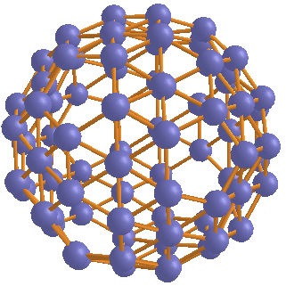
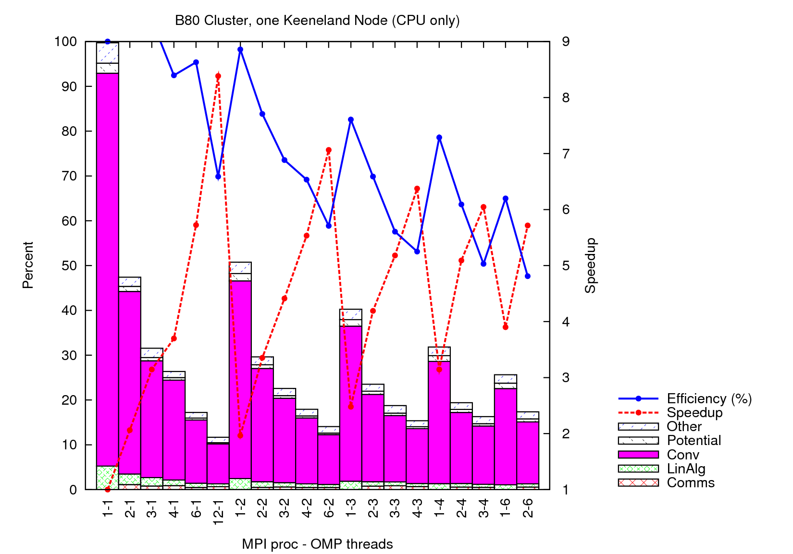
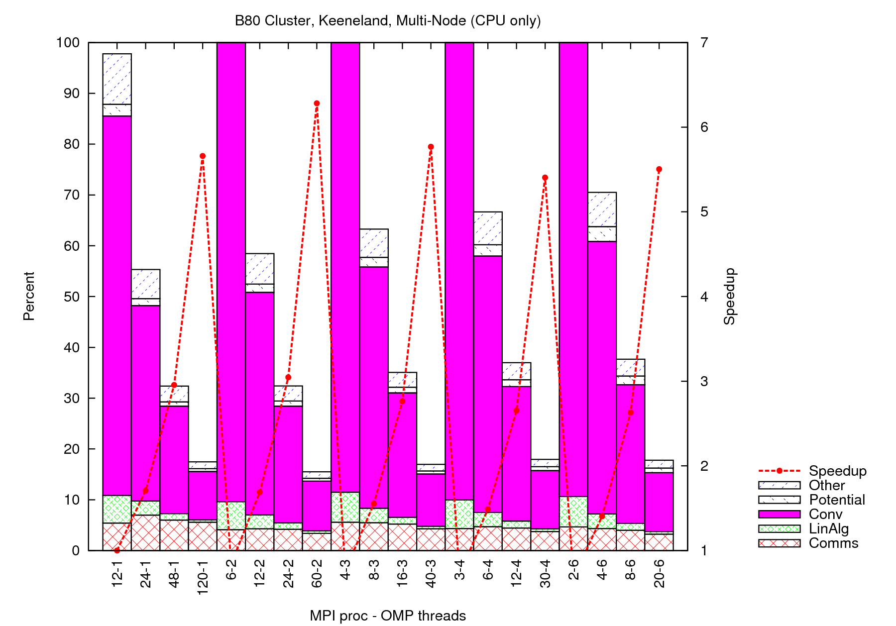

Scalability of BigDFT with MPI and OpenMP
This lesson has been created for current stable version. Versions more recent than 1.5.0 versions are fully capable of running this tutorial but input files may have to be changed according to possible earlier formats.
Introduction
There are two levels of parallelization implemented in BigDFT: MPI and OpenMP. The former works on distributed memory architectures while the latter corresponds to shared memory architectures. Each has some particular advantages as well as disadvantages. BigDFT can benefit from selected advantages of both MPI and OpenMP if a proper combination of the two is chosen. The aim of this lesson is to provide the user an idea of the differences in behaviour of the two parallelisations, in order to learn how to use the code for bigger systems and/or architectures
The MPI parallelization in BigDFT relies on the orbital distribution scheme, in which the orbitals of the system under investigation are distributed over the assigned MPI processes. This scheme reaches its limit when the number of MPI processes is equal to the number of orbitals in the simulation. To equally distribute the orbitals, the number of processors must be a factor (divisor) of the number of orbitals. If this is not the case, the orbital distribution is not optimal, but BigDFT tries to balance the load over the processors. For example, if we have 5 orbitals and 4 processors, the orbitals will have the distribution: 2/1/1/1.
Within an orbital, where the functionality is activated by the proper compiler option, BigDFT uses OpenMP to do the parallelization. For a given MPI task, most of the operations in BigDFT are OpenMP parallelized, and they are indeed sped up very well.
When a part of the code is parallelized by OpenMP, the corresponding work is performed in parallel by some OpenMP threads. To obtain an optimal behaviour, for each MPI process we need to assign a number of cores (or cpus), one core per thread, that will be responsible for managing the OpenMP threads. If we plan to use, for example, OpenMP with 6 threads, we have to assign at least 6 cores (cpus) to each MPI processes.
Lesson details
Material for the lesson
In this lesson, we will explain how to run BigDFT with MPI and/or OpenMP. We will show some examples of how to interpret scaling of BigDFT with the number of MPI processes and OpenMP threads. We will also provide a small bash script to extract total or partial times. For this purpose, we will run BigDFT jobs for a particular system, a Boron cluster with 80 atoms and 120 orbitals, shown in the top left figure. The files which can be used are the following:
- B80.xyz: the geometrical structure of the Boron 80 cluster, in format of an xyz file
- B80.dft: the inputs for a run with BigDFT (similar to a tipical production run)
- go.sub: the script to submit a BigDFT job with MPI and OpenMP
Job submission script
Since the format of the posinp.xyz and input.dft files has been discussed in previous lessons, we will have a
look only at the script for submitting a BigDFT job (go.sub) with MPI and OpenMP.
The given example is valid for for NICS Keeneland machine, but of course is not general. For example, on Todi, a Swiss Cray XE6, it looks like:
#!/bin/sh
#SBATCH --job-name="handson"
#SBATCH --ntasks=12
#SBATCH --ntasks-per-node=6
#SBATCH --cpus-per-task=2
#SBATCH --time=00:19:00
export OMP_NUM_THREADS=2
cd /users/huantd/handon
aprun -n 12 -N 6 -d 2 bigdft | tee Out_mpi12_omp2
In general, the parameters which are relevant to MPI and OpenMP parallelization are similar
- ntasks: Number of MPI processes requested for the job. Sometimes, the number of nodes is instead indicated.
- cpus-per-task: Number of OpenMP threads we plan to use for OpenMP parallelization in the code (equivalent to
OMP_NUM_THREADS) - ntasks-per-node: Number of MPI processes to be run on one node. For example, because a node
on palu machine has 24 cores (cpus), if we choose ntasks-per-node=6, we can specify cpus-per-task
up to 4. In the CURIE machine script, this quantity is inferred from the number of nodes used for the calculation (
-Noption) - export OMP_NUM_THREADS=2: OMP_NUM_THREADS is an environmental variable which have to be set to the number of OpenMP threads requested. In the submission script, we set OMP_NUM_THREADS=2, implying that we will run the job with 2 OpenMP threads when a segment of the code is parallelized by OpenMP.
- aprun -n 12 -N 6 -d 2 bigdft | tee Out_mpi12_omp2: the syntax to launch the bigdft excutable on Palu. Here, 12 is ntasks, 6 is ntasks-per-node, and 2 is cpus-per-task. This syntax may be different on different machine, e.g., aprun is replaced by mpirun on machines with mpich or openmpi. Each installation has its own submission script.
After preparing the submission script, it is submitted by a given syntax, e.g.,
ccc_msub go.subor (in other systems)
qsub go.sub
Timing data to be analyzed
The timing data of a BigDFT job is saved in the file time.yaml.
If you resubmit the run, the content of the file is appended in the bottom of the pre-existing file, so that the entire run history can be recovered
If other data have to be written, this file can be found in the data-*/ directory.
A quick look into the timing file can reveal the time needed for different classes of operations performed in the run.
Below you can find an example for the counter associated to the wavefunction optimization of a B80 run (WFN_OPT counter):
WFN_OPT: # % , Time (s), Max, Min Load (relative)
Classes:
Communications: [ 17.8, 1.94E+01, 1.29, 0.90]
Convolutions: [ 63.7, 6.95E+01, 1.02, 0.97]
Linear Algebra: [ 2.7, 3.00E+00, 1.02, 0.98]
Other: [ 8.4, 9.18E+00, 1.11, 0.90]
Potential: [ 5.1, 5.55E+00, 1.28, 0.07]
Initialization: [ 0.0, 0.00E+00, 0.00, 0.00]
Finalization: [ 0.0, 0.00E+00, 0.00, 0.00]
Total: [ 97.7, 1.09E+02, 1.00, 1.00]
In this lesson, we will analyze the 5 most time consuming Classes: Communications, Convolutions, Linear Algebra, Potential, and the remaining operations (Other - essentially Nonlocal PSP applications).
Steps to be done
- Create the input file in a given workdirectory
- Edit the submission script as needed by the machine used/provided.
- Run BigDFT jobs on the Boron 80 cluster with different combinations of ntasks and cpus-per-tasks. Note that
we are going to calculate the speedup of the code with OpenMP threads and MPI processes, so let's choose two series
of jobs:
- ntask=2, cpus-per-task=1,2, ...
- cpus-per-task=2, ntasks=1,2, ...
time.yamlfile when a new job runs in a folder which already contains atime.yamlfile. - Collect timing data from the file
time.yaml. We have provided a simple ruby script to collect all the relevant data in thetime.yamlfile. This script is calledprocess_time.rband is given here It is launched like this:> ruby process_time.rb time.yaml > #ncores nproc nthds Communications Convolutions Linear Algebra Other Potential Total | References: Time, Procs # Reference file (time.yaml): 1 1 1 1.36e-02 3.79e+03 2.43e+02 2.00e+02 1.09e+02 4.34e+03 4.34e+03 1 1 # time.yaml: #Read 3 YAML documents. 1 1 1 1.36e-02 3.79e+03 2.43e+02 2.00e+02 1.09e+02 4.34e+03 4.34e+03 1 1 2 2 1 2.15e+01 1.86e+03 1.19e+02 1.01e+02 5.45e+01 2.15e+03 4.34e+03 1 1 3 3 1 4.07e+01 1.31e+03 9.44e+01 1.04e+02 3.73e+01 1.60e+03 4.34e+03 1 1It basically collects all desired timing classes (see inside script for customize them) inside the wavefunction optimization section (WFN_OPT) of thetime.yamlfile and returns them to screen. Only this section is truly relevant for timing issues because it represents the true bulk of the BigDFT code in a production run. Also, more than one file at the same time can be passed to the ruby script. In any case, the first run of the first file which is passed is interpreted as the reference run. The timing values can then be copied inside a file and plotted with the scriptweak_scaling.gnuplot. Redirect the output of ruby script to aweak.datfile to use the gnuplot script. - Plot (gnuplot, for example) figures showing the behaviour by varying OpenMP and MPI parallelizations.
Discussions
The speedup of BigDFT on Keeneland is provided, as an example, in the figures on the bottom right of this page. Lots of information can be extracted from these curves.
 - On one node only, even if net communication time is really little, efficiency goes rapidly down when we increase the number of cores used. This is an effect caused by intranode bandwidth limitation. In other terms, data are processed faster than how memory can copy them.
- On one node, best time-to-solution is achieved by parallelizing only with MPI (provided the memory for doing this is available). This fact is not anymore true for internode runs, where the presence on OMP allows to reduce the time spent in communication (less messages have to pass through the network).
- In this machine, for this network, communication time is in absolute always the same, and this is responsible for lower efficiency at high number of processes. A closer inspection reveals that this is due to MPI_ALLTOALL operations.
- One might wonder what would happen with GPU (which substitutes OpenMP for most operations)...